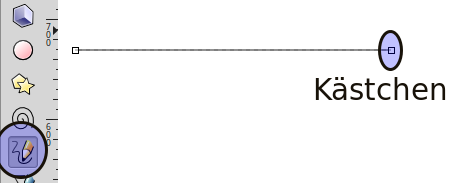

Vorsicht
Dies ist die Dokumentation des aktuellen Entwicklungszweigs der CometVisu. Es besteht daher die Möglichkeit, dass einige der hier beschriebenen Features mit dem aktuellsten Release der CometVisu nicht genutzt werden können.
Anleitung zum Erstellen eines Animierten Hydraulikplans¶
Voraussetzung¶
Inkscape
Wir erstellen einen Puffer¶
Inkscape Starten
Rechteck erstellen

Füllen und Kontur auswählen

Farbe der Kontur auf Grau stellen

Breite der Kontur einstellen
Ergebnis

Füllung mit Farbverlauf erstellen
Mit der Bearbeitungsfunktion zwei Farben für den Verlauf zuweisen
Farbe 1 (rot) Zuweisen mit 100% Deckung

Farbe zwei (blau) mit 50% Deckung

Farbverlauf ändern
es gibt zwei Möglichkeiten
Objekt drehen

Farbverlauflinie verschieben
Ecken abrunden

Wir erstellen Leitungen¶
Rohre werden mit dem Freihandlinien Zeichner erstellt. Es ist damit möglich auch gerade Linien zu Zeichnen Am Startpunkt mit der Maus klicken. Am Zielpunk wider klicken, fertig ist die Gerade. Wenn man mit der neuen Linie am letzten Kästchen der alte Linie beginnt werden die Linien zusammenhängen. Die Zeichenrichtung bestimmt wie später die Animation läuft. Von rechts nach links gezeichnet, Flüssigkeit fließt von rechts nach links.
 
Linie ein Volumen geben
Füllung der Kontur
Muster der Kontur

Farbe der Kontur

Dem Objekt einen Namen zuweisen. Wird später für die Animation benötigt.
Linie mit der rechten Maustaste anklicken
Objekteigenschaften wählen

ID ändern

XML-File anpassen (Inkscape)¶
Nun kommt das Geheimnis der animierten Leitungen
Gruppen Bilden
Die benötigte Werte können nur eingetragen werden, wenn die Leitung als Gruppe definiert wurde.
Parameter der Gruppe zuordnen
id=“<eindeutige id>“
class=“pipe_group show_flow flow_control“
data-cometvisu-active=“1/0/3“
Die Parameter pipe_group, show_flow, data-cometvisu-active und flow_control bedeuten:
pipe_group => aus dem Pfad wird eine Röhrenform erzeugt
show_flow => wird eine fliesende (abstraktes) Fluid „simuliert“.
data-cometvisu-active=“<ga>“ => animiert die Flüssigkeit bei aktiver GA
flow_control => Animation

XML-File anpassen (Editor)¶
Es ist auch möglich die SVG Datei direkt per Editor zu bearbeiten. Basis ist die Leitung als Gruppe eingefasst
Mit einem Editor die svg Datei öffnen und nach dem Kenner (blaues Rohr) suchen

den Abschnitt mit dem folgendem Code anreichern.
<g
id="<eindeutige id>"
class="pipe_group show_flow flow_control"
data-cometvisu-active="1/0/3">
<path />
</g>

Das Fertige Ergebnis im Webbrowser¶